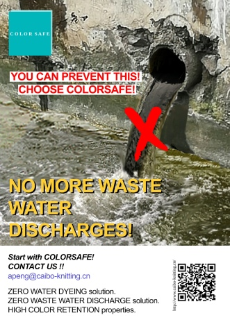
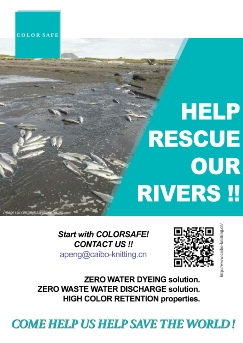
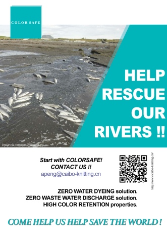
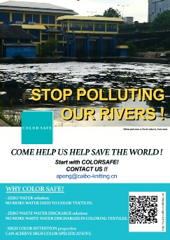
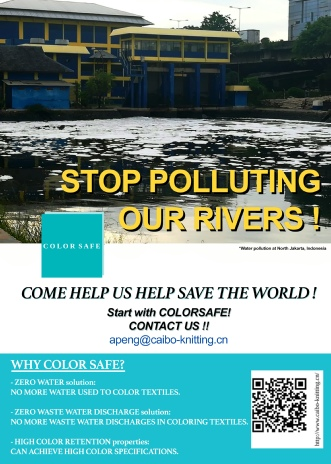
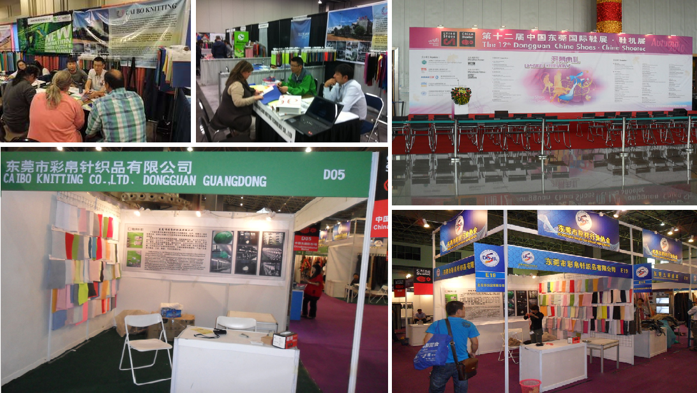

Caibo 2018. All rights reserved
Icon made by Freepik from www.flaticon.com

APPLICATIONS OF COLORSAFETM

COLORSAFETM is a method of coloring yarns without the use of water, hence no wastewater discharges and NO pollution ONLY water conservation. COLORSAFETM yarns does not have to be colored after knitted into textiles as it’s already has the requested colors.






COLORSAFETM production steps:
PHOTO – NO WATER USE ILLUSTRATION
With COLORSAFETM, water is taken out of the equation. There may be some small amounts of water that may be used for cooling and setting out purposes but these are clean water and is reused over and over again. No waste water dumped only added when levels are low or when time for cleaning comes. We can safely say that this is ZERO water levels.
There is NO more need to spend excessive amounts of water and energy to color the textiles. COLORSAFETM textiles are knitted using COLORSAFETM dyed yarns.
COLORSAFETM: HOW ITS MADE
Conventional production steps:
PHOTO – WITH POLLUTION SIGNS AT THE COLORING STAGE.
Big use of water in coloring of the yarns as well as greige materials. The water needed to do coloring is heated to over 100 Celsius turning into steam, mixed with chemicals and dyes under high pressure. The main problem here is the water that is used to color the yarns or textiles is dumped into our waterways and into the soil. More responsible textile mills will treat the waste water before its dumped. However, the question is even after treatment, most textile mills do not make 100% use of the treated water. It costs a lot to treat the waste water.
Added bonus the yarns and textiles produced using COLORSAFETM methods are able to:
- Have high color retention. This means bright colors will be brighter and will be able to keep the brightness for a longer period than conventional processes.
- With its higher ability to retain colors, it also has higher color properties as compared to convention; such as Color Migration, Migration Fastness, Rub Fastness and a few other color properties.
The reason is that the colors have been “born” into the fibres of the yarn. As illustrated in the yarns cross-section below, COLORSAFETM yarns are colored thru while in conventional yarns the colors cannot penetrate as deep and are concentrated in the circumference of the cross-section.

Photos of Cross-Sections – WITH COLORS RUNNING OFF.
